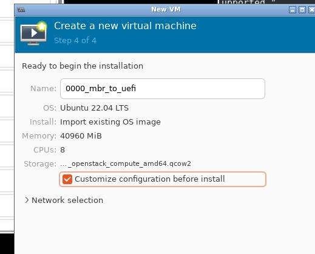
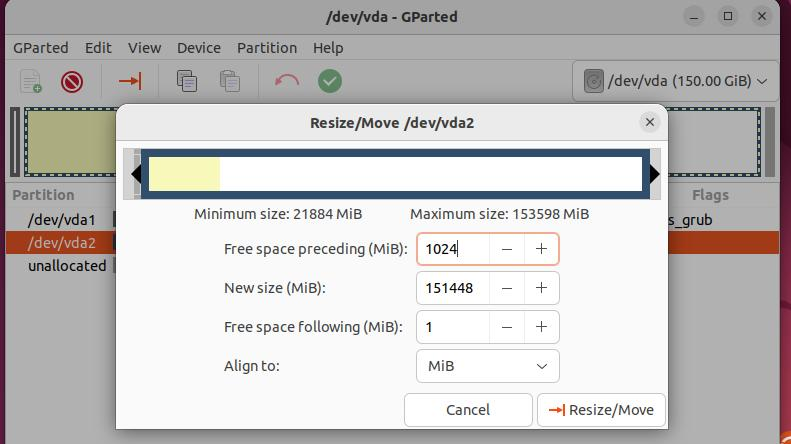
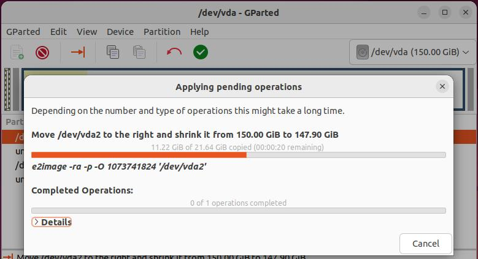
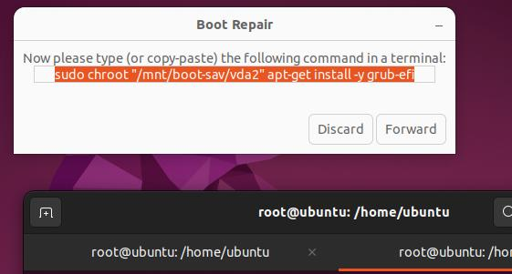
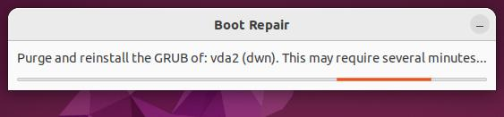

20250610
1. otii with w5100
change w5100 to vfio mode:
# grubby --update-kernel="/boot/vmlinuz-5.14.284-1_rc2.zdyun.x86_64" --args="vfio-pci.ids=1002:67c7,1002:aaf0"
[root@minirocky92 ~]# cat /etc/modprobe.d/vfio.conf
options vfio-pci ids=1002:67c7,1002:aaf0
[root@minirocky92 ~]# cat /etc/modules-load.d/vfio.conf
vfio-pci
[root@minirocky92 ~]# cat /etc/dracut.conf.d/vfio.conf
add_drivers+=" vfio vfio_iommu_type1 vfio_pci vfio_virqfd "
# dracut -f --kver `uname -r`
# reboot
after reboot:
[root@minirocky92 ~]# lspci -nn | grep 6f:00
6f:00.0 VGA compatible controller [0300]: Advanced Micro Devices, Inc. [AMD/ATI] Ellesmere [Radeon Pro WX 5100] [1002:67c7]
6f:00.1 Audio device [0403]: Advanced Micro Devices, Inc. [AMD/ATI] Ellesmere HDMI Audio [Radeon RX 470/480 / 570/580/590] [1002:aaf0]
[root@minirocky92 ~]# lspci -vvnn -s 6f:00.0 | grep -i 'in use'
Kernel driver in use: vfio-pci
[root@minirocky92 ~]# lspci -vvnn -s 6f:00.1 | grep -i 'in use'
Kernel driver in use: vfio-pci
Add gpu to vm:

2. jumper configuration
os info:
test@debian:~$ cat /etc/issue
Debian GNU/Linux 12 \n \l
test@debian:~$ uname -a
Linux debian 6.1.0-35-amd64 #1 SMP PREEMPT_DYNAMIC Debian 6.1.137-1 (2025-05-07) x86_64 GNU/Linux
Steps:
# vim /etc/apt/sources.list
# 默认注释了源码仓库，如有需要可自行取消注释
deb http://mirrors.ustc.edu.cn/debian bookworm main contrib non-free non-free-firmware
# deb-src http://mirrors.ustc.edu.cn/debian bookworm main contrib non-free non-free-firmware
deb http://mirrors.ustc.edu.cn/debian bookworm-updates main contrib non-free non-free-firmware
# deb-src http://mirrors.ustc.edu.cn/debian bookworm-updates main contrib non-free non-free-firmware
# backports 软件源，请按需启用
# deb http://mirrors.ustc.edu.cn/debian bookworm-backports main contrib non-free non-free-firmware
# deb-src http://mirrors.ustc.edu.cn/debian bookworm-backports main contrib non-free non-free-firmware
# apt update -y
# apt install -y vim nethogs iotop s-tui xrdp autossh
# apt install -y adb
manually import scrcpy
3 lab environment
(br0)10.171.172.3: otii server (br0)10.171.172.31: d3000no1
4. mbr to uefi


failed with :

add an iso:

try ubuntu:

In gparted:




Use bootrepair for uefi installation:
sudo add-apt-repository ppa:yannubuntu/boot-repair && sudo apt update
sudo apt install -y boot-repair
sudo boot-repair
Follow the hints for repairing,
sudo chroot "/mnt/boot-sav/vda2" dpkg --configure -a
sudo chroot "/mnt/boot-sav/vda2" apt-get install -fy
sudo chroot "/mnt/boot-sav/vda2" apt-get purge --allow-remove-essential -y grub-com*
sudo chroot "/mnt/boot-sav/vda2" apt-get purge --allow-remove-essential -y grub2-com*
sudo chroot "/mnt/boot-sav/vda2" apt-get purge --allow-remove-essential -y shim-signed
sudo chroot "/mnt/boot-sav/vda2" apt-get purge --allow-remove-essential -y grub-common:*
sudo chroot "/mnt/boot-sav/vda2" apt-get purge --allow-remove-essential -y grub2-common:*
sudo chroot "/mnt/boot-sav/vda2" apt-get install -y grub-efi



Boot successfully repaired.
Please write on a paper the following URL:
https://paste.ubuntu.com/p/JNvZGtyMP8/
In case you still experience boot problem, indicate this URL to:
boot.repair@gmail.com or to your favorite support forum.
Locked-NVram detected. Please do not forget to make your UEFI firmware boot on the Ubuntu 22.04.5 LTS entry (vda3/efi/ubuntu/grubx64.efi file) !
After reboot: